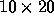
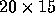
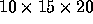
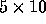
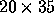
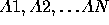

| Optimal Array Multiplication Sequence |
Given two arrays A and B, we can determine the array C = A B using the standard definition of matrix multiplication:
The number of columns in the A array must be the same as the number of rows in the B array. Notationally, let's say that rows(A) and columns(A) are the number of rows and columns, respectively, in the A array. The number of individual multiplications required to compute the entire C array (which will have the same number of rows as A and the same number of columns as B) is then rows(A) columns(B) columns(A). For example, if A is a  array, and B is a  array, it will take  , or 3000 multiplications to compute the C array.
To perform multiplication of more than two arrays we have a choice of how to proceed. For example, if X, Y, and Z are arrays, then to compute X Y Z we could either compute (X Y) Z or X (Y Z). Suppose X is a  array, Y is a array, and Z is a  array. Let's look at the number of multiplications required to compute the product using the two different sequences:
(X Y) Z
X (Y Z)
Clearly we'll be able to compute (X Y) Z using fewer individual multiplications.
Given the size of each array in a sequence of arrays to be multiplied, you are to determine an optimal computational sequence. Optimality, for this problem, is relative to the number of individual multiplications required.
For each array in the multiple sequences of arrays to be multiplied you will be given only the dimensions of the array. Each sequence will consist of an integer N which indicates the number of arrays to be multiplied, and then N pairs of integers, each pair giving the number of rows and columns in an array; the order in which the dimensions are given is the same as the order in which the arrays are to be multiplied. A value of zero for N indicates the end of the input. N will be no larger than 10.
Assume the arrays are named  . Your output for each input case is to be a line containing a parenthesized expression clearly indicating the order in which the arrays are to be multiplied. Prefix the output for each case with the case number (they are sequentially numbered, starting with 1). Your output should strongly resemble that shown in the samples shown below. If, by chance, there are multiple correct sequences, any of these will be accepted as a valid answer.
3 1 5 5 20 20 1 3 5 10 10 20 20 35 6 30 35 35 15 15 5 5 10 10 20 20 25 0
Case 1: (A1 x (A2 x A3)) Case 2: ((A1 x A2) x A3) Case 3: ((A1 x (A2 x A3)) x ((A4 x A5) x A6))